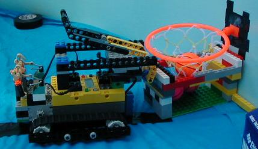

|

|
 |
CMP 108: Programming for Non-Computer Science Majors
Lehman College, City University of New York
Spring 2007
Instructor: Dr. Katherine St. John
E-mail: katherine.stjohn at lehman.cuny.edu
Phone: 718-960-7423
Office: Gillet 137E
Office Hours: Wednesdays 11am-1pm, Fridays 1-2pm, and by
appointment.
Lecture: Fridays 9am-12:30am.
Announcements:
- Grades are now available on eSIMS. Have a great summer!
- Our last class meeting will be the first day of finals, Friday,
18 May 2007. From 9-11am, the lab will be open to demonstrate any
remaining lab exercises and initial grading of projects. At 11am,
demonstrations of projects will begin. Each presentation will be
about 5 minutes, and friends and family are welcome to attend the
presentations.
- Class meets the first hour in Gillet 137, followed by a
short
break and lab in Gillet 220. If you would like to work with your
robot before class, G 137 will be open at 8:30 on Fridays.
- In addition to my office hours, you are welcome to stop by and
work with your robots whenever the doors to G 137 office suite are
open--- most Tuesday, Wednesday, and Thursday afternoons and some
mornings.
Handouts:
Useful Links:
(This page last updated on Friday, 11 May 2007.)